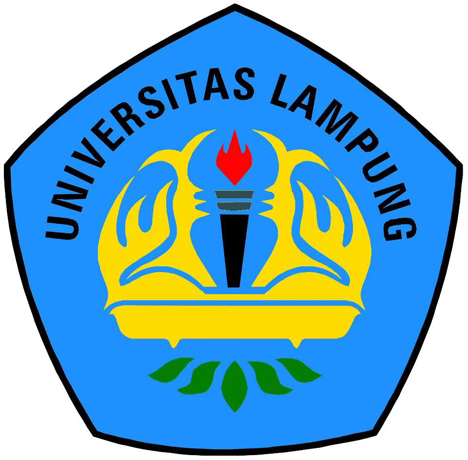

Sejarah Universitas Lampung

Keinginan mendirikan perguruan tinggi di Lampung merupakan cita-cita para tokoh masyarakat Lampung sejak tahun 1960-an, yang dimaksudkan sebagai wahana untuk mencerdaskan masyarakat pada jenjang pendidikan tinggi, karena semakin banyak putera-puteri terbaik lulusan SMA yang harus pergi ke Jawa atau Palembang untuk dapat melanjutkan studinya. Di pihak lain, Provinsi Lampung yang baru terbentuk juga sangat memerlukan tenaga lulusan perguruan tinggi dalam jumlah banyak guna melaksanakan kegiatan pembangunan di daerah ini. Cita-cita pendirian perguruan tinggi di Lampung tersebut diupayakan terwujud oleh dua panitia, yaitu:
Panitia Pendirian dan Perluasan Sekolah Lanjutan (P3SL) yang berubah menjadi Panitia Pendirian dan Perluasan Sekolah Lanjutan dan Fakultas (P3SLF) diketuai oleh Zainal Abidin Pagar Alam dan Sekretaris Tjan Djiit Soe.
Panitia Persiapan Pembentukan Yayasan Perguruan Tinggi Lampung (P3YPTL) diketuai oleh Nadirsjah Zaini, M.A. dan Sekretaris Hilman Hadikusuma .Kedua panitia dilebur menjadi Yayasan Pembina Perguruan Tinggi Lampung (YPPTL). Yayasan ini membentuk Fakultas Ekonomi, Hukum, dan Sosial (FEHS), berkedudukan di Jalan Hasanuddin 34, Bandarlampung.
Visi dan Misi
Dengan keinginan memberikan manfaat yang berguna bagi kehidupan bangsa, seluruh keluarga besar Unila bersatu padu dalam mewujudkan visi dan misi Unila ini.
Visi
Universitas Lampung menjadi Center of Excellence di tingkat Nasional dan Internasional sebagai Institusi yang kuat (BE STRONG) berlandaskan nilai-nilai luhur budaya Nasional dan Pancasila.
Misi
Menerapkan Tridharma Perguruan Tinggi yang berkualitas guna menghasilkan sumber daya manusia yang adaptif dan fleksibel terhadap perubahan serta inovasi yang bermanfaat bagi peningkatan daya saing bangsa.
Tujuan
-
- Menghasilkan lulusan yang bermutu dan berdaya saing tinggi yang cepat diserap pasar tenaga kerja dan mampu menciptakan lapangan kerja bagi dirinya dan orang lain
- Menghasilkan ipteks unggulan/baru yang terpublikasikan pada jurnal-jurnal terakreditasi di dalam dan luar negeri serta diperolehnya HaKI untuk ipteks baru tersebut
- Meningkatkan daya saing dan kesejahteraan masyarakat dengan melakukan pengabdian kepada masyarakat yang bermutu dan inovatif serta berbasis ipteks ungggulan/baru
- Meningkatkan manajemen organisasi dalam bidang akademik, keuangan, dan sumber daya manusia menuju tata kelola yang baik
- Meningkatkan aksesibilitas bagi seluruh lapisan masyarakat untuk memperoleh pelayanan pendidikan tinggi di unila
- Meningkatkan kerja sama dengan pemerintah pusat, provinsi, kebupaten/kota, dunia usaha, lembaga swadaya masyarakat (LSM), dan pemangku kepentingan lainnya; baik dalam maupun luar negeri.
Identitas Unila
Lambang Universitas Lampung
Unversitas Lampung memiliki lambang berbentuk perisai persegi lima berwarna dasar biru muda dengan kode warna RGB 1E-90-FF yang di dalamnya terdapat :
- Tulisan Universitas Lampung berwarna hitam dengan kode warna RGB 00 00 00;
- lidah api berwarna merah dengan kode warna RGB FF 00 00, bejana penopang berwarna abu-abu dengan kode warna RGB 2F 4F 4F D7, dan obor dengan tangkai berwarna hitam dengan kode warna RGB 00 00 00;
- mahkota siger berwarna kuning keemasan dengan kode warna RGB FF D7;
- pintu gerbang berwarna kuning keemasan dengan kode warna RGB FF D7;
- buku terbuka berwarna kuning keemasan dengan kode warna RGB FF D7;
- meja pepadun berwarna kuning keemasan dengan kode warna RGB FF D7; dan lima lembar daun lada berwarna hijau dengan kode warna RGB 00 80 00.
Lambang sebagaimana dimaksud pada ayat (1) memiliki makna sebagai berikut:
- Perisai persegi lima berwarna dasar biru muda memiliki makna alam kehidupan perguruan tinggi;
-
- lidah api berwarna merah,
- bejana penopang berwarna abu-abu dan
- obor dengan tangkai berwarna hitam dan memiliki makna penerang dalam kegelapan;
- mahkota siger berwarna kuning keemasan memiliki makna sifat harga diri;
- pintu gerbang berwarna kuning keemasan memiliki makna tempat lahir dan berkembang manusia terdidik;
- buku terbuka berwarna kuning keemasan memiliki makna sumber ilmu pengetahuan, teknologi, dan seni yang bermanfaat bagi kehidupan manusia;
- meja pepadun berwarna kuning keemasan memiliki makna tempat bermusyawarah; dan
- lima lembar daun lada berwarna hijau memiliki makna kemakmuran.
Struktur Organisasi

Berkunjung ke Universitas Lampung
Universitas Lampung berada di propinsi Lampung yang letaknya di ujung selatan Pulau Sumatera. Oleh karenanya Lampung merupakan ‘Gerbang Sumatera’ karena daerah penghubung antara Pulau Sumatera dan Pulau Jawa melalui jalur darat dan laut. Unila terletak di Jl.Prof. Sumantri Brojonegoro No.1, Gedong Meneng, Bandar Lampung. Wilayahnya berkisar 100 meter dari Terminal Induk Rajabasa, Bandar Lampung. Lokasi ini sangat mudah dijangkau. Untuk dapat berkunjung ke Universitas Lampung dapat menggunakan jalur darat-laut, dan udara. Bandar udara di Lampung adalah Bandara Radin Inten II, jadi perjalanan menuju Lampung melalui bandara tersebut. Terminal di Lampung adalah Terminal Rajabasa, jadi perjalanan darat dapat menuju ke terminal tersebut.
Dari Luar Indonesia
Home → Bandara Internasional Soekarno Hatta (Jakarta, Indonesia) →Bandara Radin Inten II (Lampung) → Unila
Alternatif
Home → Bandara Internasional Soekarno Hatta (Jakarta, Indonesia) →Terminal Kampung Rambutan → Pelabuhan Merak → Pelabuhan Bakauheni → Unila
Dari Jakarta
Selain menggunakan bis umum jurusan Jakarta- Merak yang harus berganti-ganti kendaraan, terdapat jasa transportasi langsung tanpa berganti kendaraan (kendaraan masuk dalam kapal laut Merak-Bakauheni)
Bis DAMRI Sta. Gambir → Tanjungkarang
Taxi Travel Jakarta → Lampung (Langsung jemput dan antar ke tujuannya)